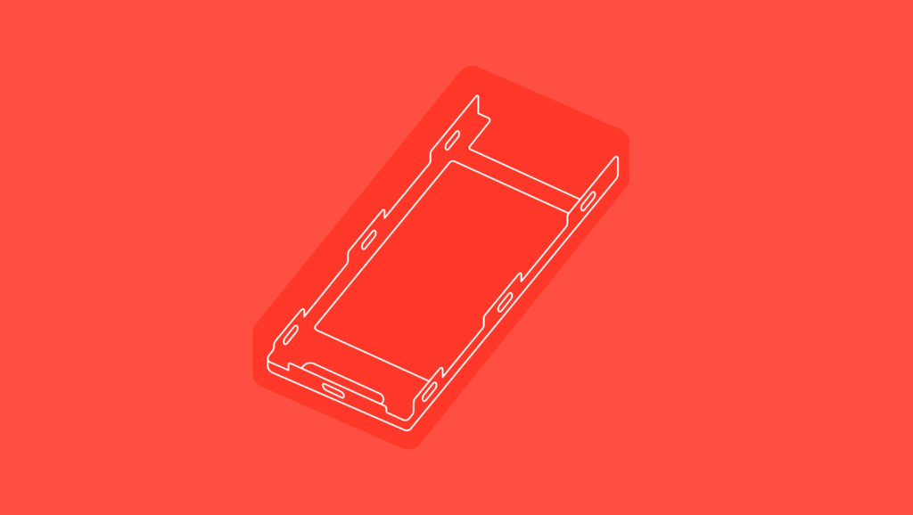

Здание, в котором расположилось подразделение передовых технологий и продуктов Google (ATAP), ничем не выдает происходящего внутри. Пиратские флаги в туалете. Большой указатель, напоминающий сотрудникам ATAP всегда вытирать за собой доску после собрания. Корреспондент Wired, одного из самых авторитетных техноблогов западного мира, был приглашен познакомиться с секретной, но очень многообещающей разработкой Google (впрочем, как и другие). Дело было незадолго до конференции Google I/O, которая прошла на прошлой неделе. Далее от первого лица.
Рик Остерло, недавно нанятый босс по аппаратном обеспечению в Google, вышел из здания, чтобы поприветствовать меня широкой улыбкой, но даже он не впустил меня внутрь.
В конце концов, меня проводят в конференц-зал. Белые доски чисты, если не считать отдельной фразы, которая была написана чем-то перманентным: Aim High («Бери выше»). Дэн Кауфман, бывший директор по инновациям в DARPA и новообретенный глава ATAP, сидит за столом вместе с тремя мужчинами, отвечающими за одну из самых амбициозных идей внутри фабрики амбициозных идей Google: Project Ara, модульный смартфон. Спросить кого-нибудь, так Ara однажды окажется либо будущим телефонов — вечным, абсолютно персональным устройством, — либо несбыточной мечтой.
Прошло больше года с тех пор, как Google показала Ara на публике, и с тех пор многое изменилось. Но не миссия: создать смартфон из взаимозаменяемых частей, которые можно сменять на лету, в зависимости от того, что вам нужно в данный момент. Добавьте модуль с широкоугольной камерой на время похода. Поставьте телефото и батарею побольше на время футбольного матча. Замените дисплей дисплеем с электронными чернилами, чтобы почитать во время длительного перелета. Идея в том, чтобы менять модули ради продления срока службы смартфона — устройство будет жить пять лет вместо двух — и уменьшить потери, вызванные необходимостью апгрейда.
Проблемой было не что, а как. Сегодня Рафа Камарго, технический руководитель проекта Ara, хочет показать мне, что у него получилось. Он берет черный телефон с белого стола перед ним, переворачивает его и нажимает на кнопку питания. Тот включается. Затем он берет модуль камеры со стола, хлопает его на телефон, открывает приложение камеры и делает четкий снимок. «Вот вам камера, живая», говорит Камарго.
Секундочку. Чувствуете, чем пахнет? Работает! Спустя несколько лет неудачных демонстраций, общественного брюзжания и тревожной тишины, Ara работает. Около 30 человек в ATAP использует Ara в качестве своего основного телефона. Камарго больше переживает об эстетике, чем о том, включится он или нет. «Пожалуйста, не обращайте внимания на его внешний вид, — говорит он, покручивая прямоугольный смартфон в своих руках, — потому что это прототип». Это не концепт, не идея, не видео на YouTube. Это прототип. Комплекты для разработчиков Ara начнут раздаваться в конце этого года, а версия для пользователей выйдет в 2017 году. «Мы уже создали все ключевые компоненты для платформы», говорит Камарго. Ara больше не является экспериментальной частью ATAP: он получил собственное подразделение в Google. Осталось выяснить, хватит ли места для очередной революции в области смартфонов.